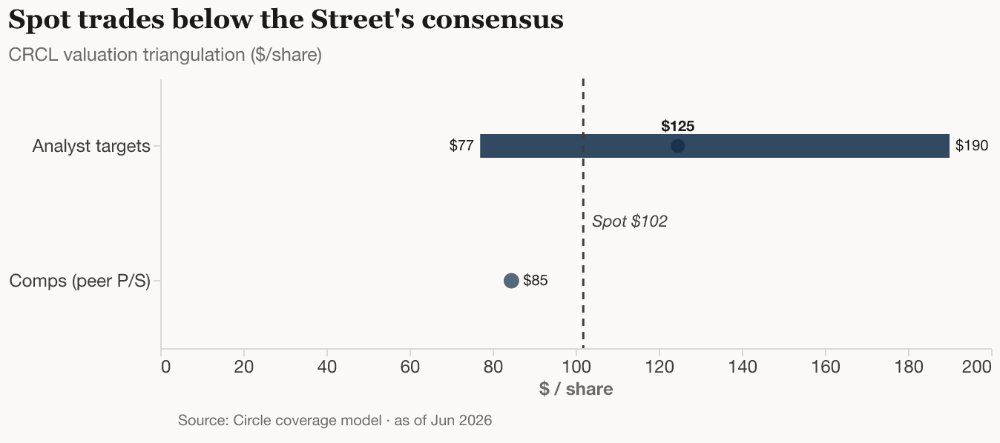
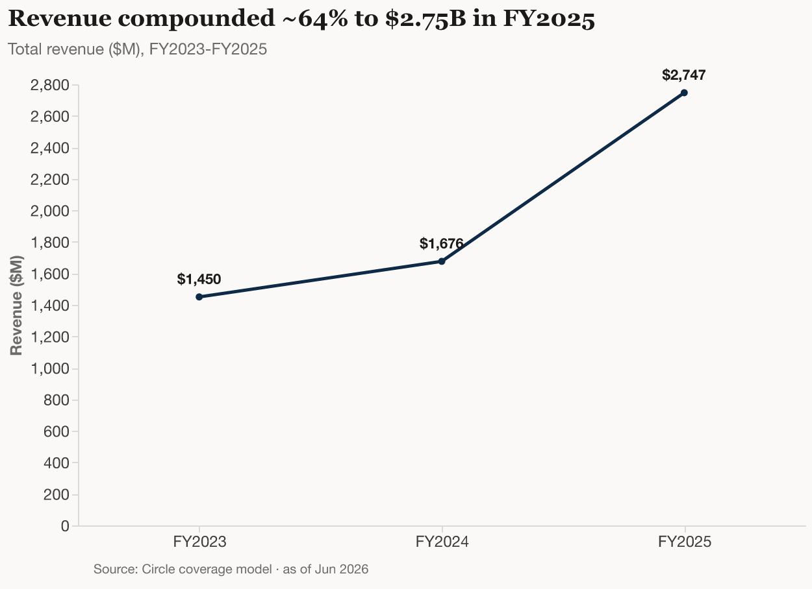
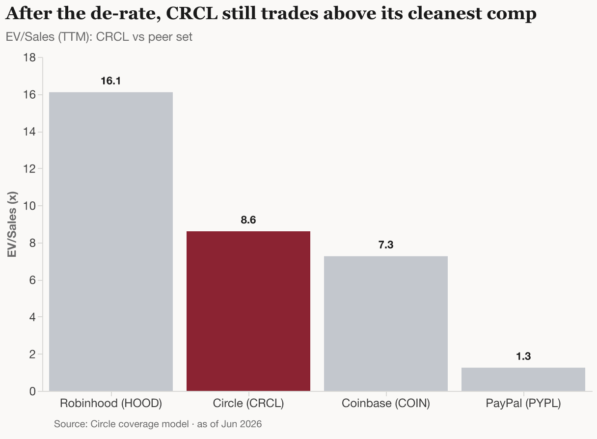

A single-name analyst report on the USDC issuer: what the business actually is, why its earnings power is a leveraged bet on the front end of the Treasury curve and on one distribution partner, and whether ~8.6x sales is the right price after a 66% drawdown. Numbers tie to the linked model; the four exhibits are model-derived and auditable; full provenance in the findings sidecar.
Stance: cautious / below-consensus at ~$102. Circle is a high-quality, fast-growing, regulation-advantaged franchise sitting on top of a structurally rate-levered, distribution-taxed income statement — and at ~8.6x EV/Sales 1 it is still priced closer to a software platform than to the money-market-fund-like float business it actually is. The stock has already corrected hard — ~$101.85 on June 2, 2026, down ~66% from a $298.99 post-IPO high 1 — but the de-rate from ~10.0x to ~8.6x sales 1 has not made it cheap against the honest comparable, Coinbase at ~7.3x 1. Our base case sits below the Street’s consensus 1: the two forces that drive the model are turning the wrong way at the same time, and the multiple does not yet reflect it.

Exhibit 1 — Spot trades below the Street’s consensus, and our base case sits below spot. At ~$101.85 1, CRCL trades below the $124.63 consensus 12-month target and inside a wide $77–$190 Street band 1; the model’s peer-median comps cross-check implies ~$85 (Triangulation tab), below spot, and our base case is ~$90–100 — so the asymmetry skews down. The football-field range resolves to the model’s pt_low / pt_consensus / pt_high, the comps marker to comps_implied_ps, and the dashed spot line to price_now.
The business in one equation: revenue ≈ (USDC in circulation) × (yield on the reserves backing it). Roughly 96% of FY2025 revenue was “reserve income” — interest Circle earns on the dollars users hand over to mint USDC 2 — so the income statement is, to a first approximation, a position in short-term Treasuries financed by an interest-free, redeemable-on-demand deposit base. That is a genuinely good business when rates are high and circulation is growing. It is a worse business when the Fed is cutting and a single distributor already takes ~half the spread — which is the configuration we are now in.
The three load-bearing facts of the thesis:
The variant view. Consensus underwrites continued ~40% circulation growth 5 and a benign rate path. We think those two assumptions are in tension: circulation growth this strong is real, but a large, sticky share of the spread is given away to Coinbase (~53% of gross reserve income 2) while the yield on the float rolls down — so net economics compound far more slowly than gross circulation. Mark the reserve yield toward ~3% and circulation growth toward a still-healthy ~25%, and the model supports roughly $90–100, not the Street’s ~$125–145 1. The bull case ($190 on the cited panel 1, a re-acceleration of circulation against a flat-rate backdrop) and the bear case (~$77 1, a faster Fed-cut cycle into the margin squeeze) bracket an asymmetry we read as balanced-to-unfavorable here, because the catalyst path over the next 12 months — Fed easing, decelerating Q1 net income 5, and a distribution tax that stays high (~53% 2) even though it has stopped rising — points down before it points up.
What would change our mind (developed in §9): two consecutive quarters of reserve yield holding ≥3.4% with circulation still compounding >30%; or the Circle Payments Network and USYC crossing from <1% of revenue 32 into a visible second earnings leg. Either would re-rate the franchise on its growth, not its rate exposure.
The sell-side frames Circle as the regulated, transparent winner of stablecoin adoption — a reasonable frame, and the reason the analyst panel we cite shows a median 12-month target of ~$120.50 and a consensus of ~$124.63 1. (That is the narrower FMP panel; the broader Street is higher and wider still — roughly $137–146 average, with bulls to ~$243–250 and bears near $60–77 1 — so our ~$90–100 base case sits below every consensus read, not merely the low panel, which only widens the downside-to-consensus gap below.) Our disagreement is not with the adoption story; USDC circulation of $77.0 billion, up 28% year-over-year 5, and on-chain settlement of $21.5 trillion in Q1 2026 alone, up 263% 5, are not in dispute. Our disagreement is with the assumption that adoption converts cleanly into Circle’s earnings.
It does not, for two structural reasons that compound.
First, the yield roll-down is mechanical, not cyclical noise. Because ~94–96% of revenue is reserve income 52, the topline tracks the front end of the curve with a short lag. The reserve return rate fell to 3.5% in Q1 2026 (−66bps YoY) 3 even as average circulation grew, and the FY2025 10-K quantifies the leverage precisely: ±$756 million of reserve income per 100bps 2. The reason Q1 revenue still grew 20% 5 is that ~39% average-circulation growth out-ran the yield decline — but that race narrows every quarter the Fed eases, and it is the net of the two that the equity owns.
Second, the distribution tax is high and structurally sticky. Circle keeps only the reserve income that does not flow to a distributor, and the contract pays the dominant distributor an outsized cut. Coinbase received ~$1.4 billion in FY2025 2 — ~53% of gross reserve income 2. That dollar cost rose from a restated $924.5 million in FY2024 2 (the S-1 originally reported $907.9M 4), but it grew slower than revenue (+51% vs +64% 22), so Coinbase’s share of gross reserve income actually edged down year-over-year — from ~56% in FY2024 to ~53% in FY2025 2. So the tax is high and sticky, not currently rising — and that distinction matters: the forward danger is structural, not yet realized, because the contract pays Coinbase 100% of the reserve income on USDC held on its platform 4, so the share would climb again if USDC re-concentrated there. Strip the per-share math down: the net pre-opex profit swing per 100bps is only ~$387 million 2, smaller than the gross $756M 2, precisely because ~$369 million of each 100bps swing is absorbed by the distribution offset 2. The distributor sits between Circle and roughly half of its own rate sensitivity.
Exhibit 2 — A ±100bp rate move swings gross reserve income ≈ ±$756M, but the distributor absorbs about half. Roughly $369M of each 100bps swing is given away through the distribution offset 2, so net pre-opex profit moves only ≈ ±$387M 2 against the ±$756M gross 2 — the Street capitalizes the gross story, but the equity owns the net.
Put together, the Street capitalizes the gross growth story; the equity owns the net. On our marks — yield to ~3%, circulation growth decelerating to ~25%, Coinbase share holding above 50% — through-cycle net margins are lower than an 8.6x sales multiple implies, and fair value sits in the low-$90s to ~$100, between the comps-implied ~$85 (Triangulation) and the Street consensus 1. That double-digit-dollar gap to consensus, against ~$25 of upside if consensus is right and ~$90+ to the panel bull, is the asymmetry — and it skews the wrong way.
Circle is, to a first approximation, a money-market fund whose “shares” circulate on 34 blockchains 6 and whose “management fee” is the entire spread — which is why ~96% of FY2025 revenue is reserve income 2, not anything a software company would recognize. The mechanics: a stablecoin is a blockchain token engineered to hold a constant value (for USDC, exactly one U.S. dollar). A user gives Circle $1, Circle mints 1 USDC and holds the $1 in reserve; the user can redeem 1 USDC for $1 at any time, and the token itself pays the holder nothing. What Circle does with the pooled dollars in the interim — invest them in short-dated Treasuries and keep the interest — is the business.
The reserves are conservatively held and transparently disclosed, which is the franchise’s core differentiator. They sit in the Circle Reserve Fund — a BlackRock-managed Rule 2a-7 government money-market fund custodied at BNY, holding $66.3 billion at year-end 2025 7, with ~83% of total reserves in Treasuries and overnight Treasury repo 8. That structure is what lets Circle market USDC as the compliant, audited alternative to offshore issuers — a real moat, but one that also caps the yield Circle can earn (it cannot reach for risk), which matters when the risk-free rate falls.
The driver math reconciles cleanly in the model. FY2025 revenue was $2.747 billion, up 64% year-over-year 2, and Q1 2026 revenue was $694 million, up 20% 5, of which ~$653 million (94%) was reserve income 5. The largest non-reserve line — subscription and services — was just $34.9 million in Q1 7, which tells you how little of today’s P&L is anything other than the float. The Calculations tab rebuilds revenue from average circulation × yield and ties to within rounding of the reported figures, confirming the engine is understood rather than asserted — and confirming that any forecast of Circle is really a forecast of two numbers: the float and the yield.

Exhibit 3 — Revenue compounded ~64% to $2.75B in FY2025, and ~96% of it is reserve income. FY2025 revenue of $2.747B was up 64% year-over-year 2; roughly 96% was interest earned on the Treasuries backing USDC 2 — so the top line is, to a first approximation, a leveraged position in the front end of the curve, not a software revenue stream.
The stablecoin market is ~$320 billion as of June 2, 2026 (an all-time high of ~$323B was set in mid-May) 1, and it is a duopoly: Tether (USDT) at ~$187.8 billion, ~59% share, and USDC second at ~24% 1 — together more than four-fifths of the entire market. Everything below the top two is a long tail: Ethena USDe ~$4.5B 9, DAI ~$4.6B 1, PayPal PYUSD ~$3.0B 1, Ripple RLUSD ~$1.8B 1. So Circle’s competitive question is not “will stablecoins win” but “can the clear #2 earn an acceptable return given who sits above and beside it.”
The uncomfortable comparison is Tether. Tether reported more than $10 billion in net profit in 2025 10 — on a larger float, yes, but with a fraction of Circle’s distribution leakage and a higher-yielding (riskier) reserve mix. Circle, by contrast, posted a FY2025 GAAP loss (§5). The gap is not operational sloppiness; it is the price of Circle’s two strategic choices — share the spread with distributors to win compliant Western distribution, and hold only the safest reserves to keep the regulatory halo. Those choices are defensible, but they are why the #2 in a duopoly out-earns Circle by a wide margin, and why “USDC is gaining share” does not translate into “Circle is gaining Tether-like profit.”
Circle’s genuine edge is regulatory. It is the first global issuer compliant with the EU’s MiCA framework (via a French Electronic Money Institution license, effective July 2024) 1111, with weekly reserve disclosure and monthly Big-Four attestation. That is a durable moat against offshore Tether in regulated Western channels — but it is a moat around distribution access, not around margin, which is the distinction the bull case tends to blur. Distribution, in fact, costs money even beyond Coinbase: Circle paid a $60.25 million one-time upfront fee plus ongoing incentives to seed USDC on Binance 4 — a reminder that the #2 must buy the distribution the #1 gets through entrenched exchange and emerging-market demand. (One nuance: Circle reports a higher ~28% share of attested USD fiat-backed stablecoins 5 than its ~24% share of the all-in market 1, because the attested denominator excludes algorithmic and crypto-backed coins — a more favorable framing the reader should normalize against the all-in number.)
FY2025 produced a GAAP net loss of roughly $70 million on $2.747 billion of revenue 2 — but the loss is an artifact, not a signal. It was driven by a $424 million one-time IPO-vesting stock-based-compensation charge booked around the June 2025 listing 2; strip it and the underlying business is cash-generative. The cleaner read of run-rate profitability is Q1 2026 net income from continuing operations of $55.2 million 3. Earnings-quality scrub: the SBC charge is non-recurring and correctly excluded from run-rate, but it is also a reminder that share count and dilution matter for a recently-IPO’d name (248.58M shares outstanding 1) — the per-share denominator the network-investment story will ultimately be judged against.
The direction, however, is the concern. Q1 2026 net income fell 15% year-over-year even as revenue grew 20% 5 — the first clear evidence of the margin squeeze the thesis predicts. The dominant driver is the falling reserve yield 3, not the distributor: distribution, transaction and other costs actually eased to 58.6% of Q1 revenue 7 (from ~60% a year earlier), so the squeeze is the rate cycle working through a ~94% reserve-income mix 5, with a still-high distribution tax 2 capping the level rather than driving the decline. Distribution, transaction, and other costs were $1.66 billion in FY2025 2 and ran at 58.6% of revenue in Q1 2026 7, so well over half of every revenue dollar is already committed before corporate opex. Headcount was ~1,100 at year-end 2025 2 and Circle carries zero corporate debt — a clean balance sheet (~$1.5B net cash 1) that gives it room to invest in the network products, but not a balance sheet that changes the earnings trajectory.
The growth vectors meant to diversify Circle away from pure rate exposure are real but immaterial today: the USYC tokenized money-market fund held $1.5 billion at year-end 2025 2; the Circle Payments Network ran $8.3 billion of annualized volume 3; and the Arc Layer-1 network token presale raised $222 million at a ~$3B fully-diluted network valuation 5. These are options on a non-rate revenue stream — worth watching, but rounding error in the P&L, which is exactly why they cannot yet justify a software multiple.
On the model’s marks, CRCL trades at ~8.6x EV/Sales and ~9.1x P/S on a trailing-twelve-month basis 1 — a ~$25.3 billion market cap and an enterprise value of ~$23.8 billion (net of ~$1.5B corporate cash) 1, against FY2025 revenue of $2.747 billion 2 (the ~8.6x is the reported TTM multiple; on the model’s FY2025-revenue base the same EV lands at ~8.7x — the same story either way). The headline change since the prior (late-May) read is the de-rate from ~10.0x to ~8.6x EV/Sales 1, driven almost entirely by the ~11% price decline rather than by estimate revisions — the multiple has compressed, but off a starting point that priced Circle like a hyperscaler-adjacent grower.
The cross-sectional comparison is where the “still not cheap” conclusion comes from:
| Company | EV/Sales (TTM) | Read-through |
|---|---|---|
| Circle (CRCL) | ~8.6x 1 | rate-levered single product |
| Coinbase (COIN) | ~7.3x 1 | diversified crypto rails; partly fee-based |
| Robinhood (HOOD) | ~16.1x 1 | high-growth brokerage; richest of the set |
| PayPal (PYPL) | ~1.25x 1 | legacy payments; the floor |

Exhibit 4 — After the de-rate to ~8.6x sales, CRCL still trades above its cleanest comp. CRCL at ~8.6x EV/Sales 1 sits above Coinbase (~7.3x 1) — a more diversified, partly fee-based business — and far below Robinhood (~16.1x 1); PayPal (~1.25x 1) marks the mature-payments floor. The premium to COIN is the burden of proof on the bull.
Coinbase is the honest comparable — a crypto-rails business that also earns on idle balances and transaction fees — and CRCL’s premium to it (~8.6x vs ~7.3x) is hard to defend on a business whose revenue is ~94% a single rate-sensitive line 5, unless one believes circulation growth will durably out-run the yield decline. Robinhood at ~16x is a different animal (a high-growth brokerage), and PayPal at ~1.25x marks the floor for a mature payments name; CRCL sits in the upper-middle, closer to the growth names than to the utilities, which is the crux of the disagreement.
The model’s Triangulation tab frames a football field rather than a point estimate: applying the peer-median sales multiple to Circle’s revenue implies ~$85 per share — below the ~$102 spot — while the cited analyst range runs $77 (bear) / $124.63 (consensus) / $190 (bull) 1, i.e., roughly −24% / +22% / +87% versus spot (the broader Street consensus, ~$137–146 1, implies more upside on the panel but a larger gap below our fair value). We weight toward the lower half of that band. A stablecoin issuer’s rate-levered model differs structurally from an exchange or broker, so the comps are directional, not dispositive — but when the cleanest comp (COIN) and the peer-median cross-check both sit below the stock, the burden of proof is on the bull, and that burden is “circulation growth re-accelerates faster than the yield falls.”
Base and bear cluster at or below today’s ~$102; the bull (~$190 1) requires a rate cycle Circle does not control — a balanced-to-unfavorable asymmetry. The model’s Scenarios tab isolates the rate path — flexing reserve income through the ±$756M-per-100bps sensitivity 2 with circulation held flat — and the equity cases below layer a circulation and multiple view on top of that rate spine.
The asymmetry is the point: the base and bear cluster near or below spot, the bull requires a macro tailwind Circle does not control, and the single swing variable across all three is the reserve yield × circulation product, net of the Coinbase share. That is the number to model, not the gross circulation headline.
The risk register ties each item to the model assumption it threatens.
| Risk | Category | Tied model input | Severity | Re-underwrite trigger |
|---|---|---|---|---|
| Fed cuts faster than base case | Macro | reserve_yield_q126 / rate_sens_resv_100bp |
H | Reserve yield prints <3.2% for two quarters |
| Coinbase share re-climbs (USDC re-concentrates on Coinbase) | Financial | coinbase_share_fy2025 / dist_pct_q126 |
M-H | Distribution costs back above 60% of revenue |
| Bank/fintech competitive entry | Regulatory/Market | usdc_mkt_share / stablecoin_total |
M-H | A top-5 bank or fintech launches a scaled stablecoin |
| GENIUS Act bars holder yield | Regulatory | n/a (growth-lever cap) | M | — (structural, already binding 14) |
| Circulation growth stalls | Operational | usdc_avg_q126 / circulation driver |
M | Average circulation flat QoQ |
| Multiple de-rates to utility | Market | ev_sales_ttm_rep |
M | EV/Sales compresses below COIN’s ~7.3x 1 |
The counter-thesis, stated at its strongest. The bull is not “rates will stay high forever.” The bull is that USDC is becoming default dollar infrastructure — 34 chains 6, $21.5T of settlement 5, a MiCA-compliant moat 11 — and that at scale the network effects (CPN, developer adoption, tokenized-asset rails via Arc and USYC) make Circle a payments-and-settlement platform whose rate exposure is just the starting revenue line, not the whole story. If CPN and USYC scale, the rate sensitivity becomes a shrinking share of a growing pie — Standard Chartered models the total stablecoin market reaching ~$2 trillion by end-2028 16 and Citi’s base case ~$1.9 trillion by 2030 17, roughly 6x today’s ~$320B 1, so even a flat ~24% share would put USDC near ~$460–480 billion of circulation — and on that arithmetic 8.6x sales will look cheap in hindsight. We take this seriously; it is why the stance is “cautious,” not “short.” The decision criterion that would flip our base case: two consecutive quarters in which (a) the reserve yield holds ≥3.4% 3 while circulation compounds >30% 5, or (b) non-reserve revenue (CPN + USYC + subscription 327) crosses ~10% of total — either of which severs the “just a leveraged rate bet” framing the bear case rests on.
Crucially, the GENIUS Act cuts both ways. Signed into law July 18, 2025 13, it mandates ≥1:1 reserve backing 13 — legitimizing compliant issuers like Circle against offshore Tether — but it also prohibits issuers from paying any yield to holders 14, which removes the one lever (share the spread with users) that could lock in USDC balances against bank and fintech entrants. So the same law that builds Circle’s moat against Tether lowers the moat against the regulated competitors it now invites.
Compact reference; full three-component provenance (URL + local snapshot + page/section) lives in the findings sidecar (2026-06-02-circle-crcl-deeper-report.md.findings.jsonl, S001–S082) and is emitted by the renderer. Primary filings (S-1, FY2025 10-K, Q1 2026 10-Q/8-K, earnings release) ground the economics; SEC EDGAR grounds the share count 1; live market data (stockanalysis.com, DefiLlama, FMP) as of 2026-06-02 grounds valuation, peer multiples, analyst targets, and stablecoin sizing 11111111; trade press grounds the sentiment/price-action narrative 151. The financial backbone is cross-checked against the linked model (CIK 0001876042). This report supersedes the 2026-05-31 CRCL primer; numbers refreshed to June 2, 2026 and the share count corrected to the authoritative 10-Q basis. This is the charted re-run of the 2026-06-02 deeper report: the four exhibits are model-derived (each series resolves to a named range in the linked model; the chart-integrity audit re-verifies them at ship), and the prose carries forward unchanged. The chartless 2026-06-02 deeper report is retained as the comparison baseline.
other “CRCL traded at ~8.6x EV/Sales and ~9.1x P/S (TTM revenue ~$2.86B) on 2026-06-02, down from ~10.0x EV/Sales at the late-May 2026 level”, 2026-06-02 · local: 2026-06-02-market-data-refresh-crcl-peers-stablecoins.md · other ↩↩↩↩↩↩↩↩↩↩↩↩↩↩↩↩↩↩↩↩↩↩↩↩↩↩↩↩↩↩↩↩↩↩↩↩↩↩↩↩↩↩↩↩↩↩↩↩↩↩↩↩↩↩↩↩↩↩↩↩
primary-filing “Reserve income (interest on USDC/EURC reserves) as a share of total revenue, FY2025”, 2026-03-09 · local: 2026-03-09-sec.gov-circle-10k-fy2025-coinbase-rate-sensitivity.md · Primary ↩↩↩↩↩↩↩↩↩↩↩↩↩↩↩↩↩↩↩↩↩↩↩↩↩↩↩↩↩↩↩↩↩↩↩↩↩↩↩↩↩
earnings-transcript “Reserve return rate (effective yield on USDC reserves), Q1 2026”, 2026-05-11 · local: 2026-05-11-sec.gov-circle-q1-2026-earnings-press-release.md · earnings-transcript ↩↩↩↩↩↩↩↩↩↩↩↩
primary-filing “Coinbase revenue-share mechanic: 100% of reserve income on USDC held on Coinbase's platform; 50% of the remaining (off-platform) payment base”, 2025-05-27 · local: 2025-05-27-sec.gov-circle-s1a-coinbase-binance-economics.md · Primary ↩↩↩↩
primary-filing “Circle guides USDC in circulation to grow at a 40% CAGR over a multi-year through-cycle horizon”, 2026-05-11 · local: 2026-05-11-sec-gov-circle-q1-2026-results.md · Primary ↩↩↩↩↩↩↩↩↩↩↩↩↩↩↩↩↩↩↩↩
investor-presentation “USDC is natively issued on 34 blockchain networks as of May 2026”, 2026-05-28 · local: 2026-05-28-circle-com-usdc-page.md · investor-presentation ↩↩
primary-filing “Circle Reserve Fund (BlackRock-managed, BNY-custodied) balance, Dec 31 2025”, 2026-05-11 · local: 2026-05-11-sec.gov-circle-q1-2026-10q-revenue-note.md · Primary ↩↩↩↩↩
news-aggregator “USDC reserves total approximately $77.1 billion, with roughly 83% in U.S. Treasuries and overnight Treasury repo (Circle Reserve Fund / BlackRock-managed) and roughly 17% in cash at banks (week ending May 21, 2026)”, 2026-05-23 · local: 2026-05-23-weex-com-usdc-reserve-composition.md · news-aggregator ↩
news-aggregator “Ethena USDe is the third-largest stablecoin with circulation of approximately $4.5 billion (late May 2026), down from a 2025 peak above $14 billion”, 2026-03-16 · local: 2026-03-16-stablecoininsider-org-ethena-usde.md · news-aggregator ↩
trade-press “Tether reported more than $10 billion in net profit for full-year 2025”, 2026-01-30 · local: 2026-01-30-coindesk-com-tether-2025-profit.md · Trade press ↩
primary-filing “Circle is the first global stablecoin issuer to comply with the EU's MiCA framework, via a French Electronic Money Institution (EMI) license from the ACPR (effective July 1, 2024)”, 2024-07-01 · local: 2024-07-01-circle-com-first-mica-compliant.md · Primary ↩↩↩
earnings-transcript “USDC held on Circle's own platform (margin-accretive share), end of Q1 2026”, 2026-05-11 · local: 2026-05-11-fool.com-circle-q1-2026-earnings-transcript.md · earnings-transcript ↩
primary-filing “Date signed into law by President Trump”, 2025-07-18 · local: 2025-07-18-whitehouse-genius-act-signed.md · Primary ↩↩↩
www.govinfo.gov “Prohibition on issuers paying yield/interest to stablecoin holders”, 2025-07-18 · https://www.govinfo.gov/content/pkg/PLAW-119publ27/html/PLAW-119publ27.htm · local: 2025-07-18-govinfo-gov-genius-act-publaw-119-27.md · Primary ↩↩↩
trade-press “CRCL fell ~30% into late May 2026 on bank/fintech stablecoin competitive-entry news”, 2026-05-29 · local: 2026-05-29-investing-com-crcl-fell-30pct-bank-competition.md · Trade press ↩↩↩↩
sell-side-coverage “Standard Chartered forecasts the total stablecoin market to reach $2 trillion by the end of 2028”, 2026-03-31 · local: 2026-03-31-decrypt-co-standard-chartered-2t-2028.md · Sell-side ↩
sell-side-coverage “Citi GPS base-case forecast for total stablecoin issuance by 2030 is $1.9 trillion (bull case $4.0T, bear case $0.9T)”, 2025-09-25 · local: 2025-09-25-citigroup-com-stablecoins-2030.md · Sell-side ↩
primary-filing “IPO offer price per share”, 2025-06-04 · local: 2025-08-21-equilend-crcl-lockup-structure.md · Primary ↩↩
primary-filing “Total gross proceeds raised in IPO”, 2025-06-04 · local: 2025-06-05-renaissancecapital-circle-largest-pop.md · Primary ↩↩
trade-press “All-time high stock price (post-IPO peak)”, 2026-05-29 · local: 2026-05-29-plisio-crcl-interest-rate-trap.md · Trade press ↩